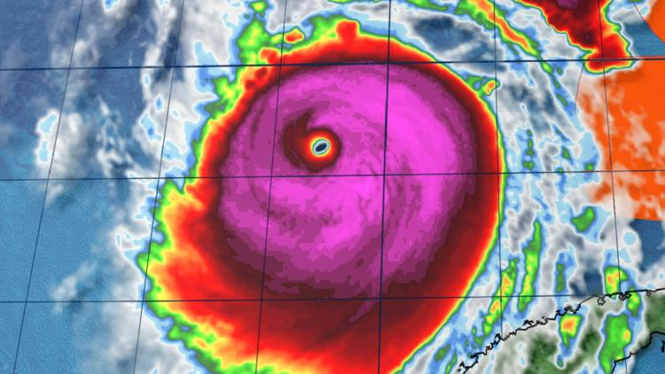
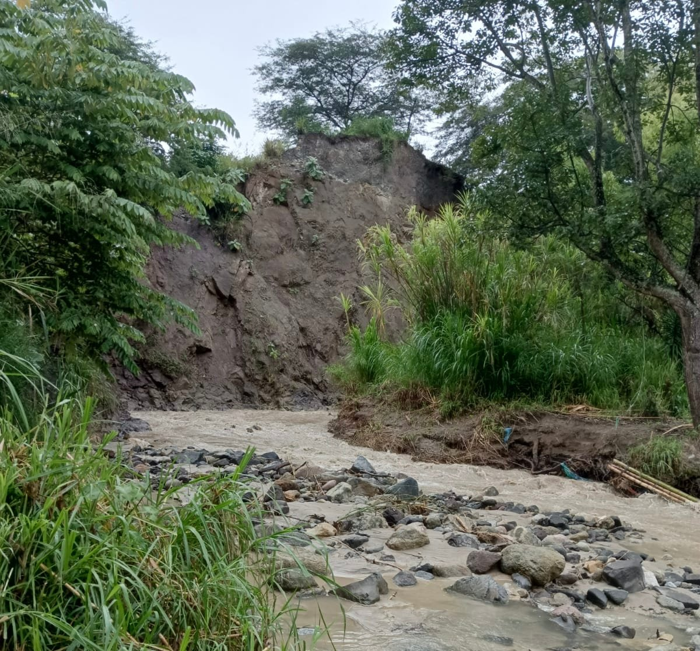
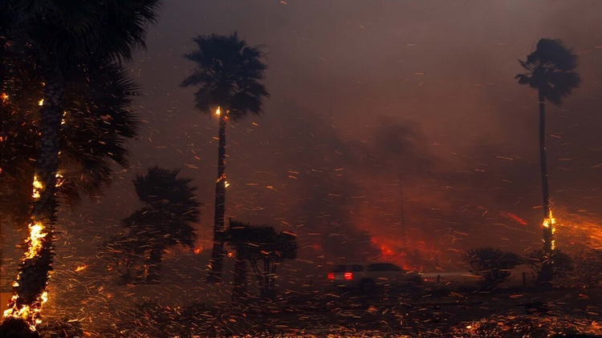
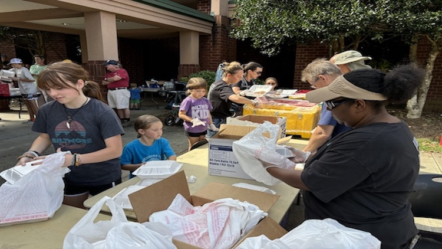

Update:
Death toll in Texas flood disaster rises to at least 121
Update:
Death toll in Texas flood disaster rises to at least 121
Texas flooding death toll rises
Read More
The Rising Threat of Hurricane Season
How To Survive A Flash Flood
Removing Obstacles & Building Bridges in Ecuador
Los Angeles Wildfire Timeline
Ashville's Road to Recovery
Volunteering As A Path To Healing

 Volunteering As A Path To Healing
Volunteering As A Path To Healing